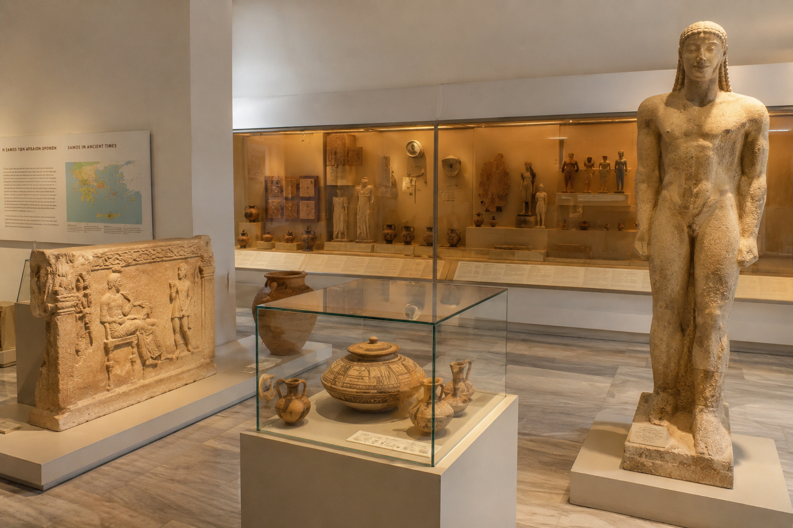
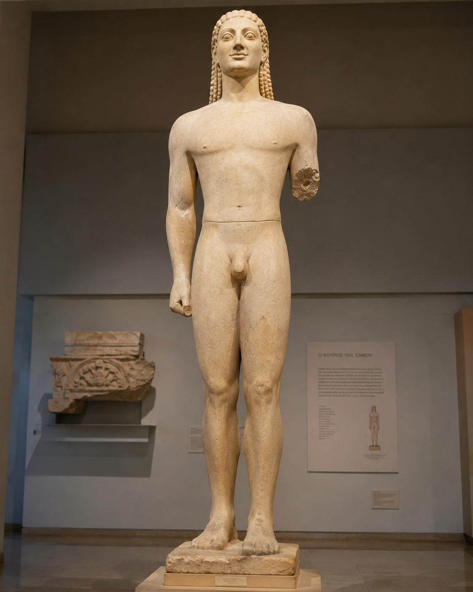
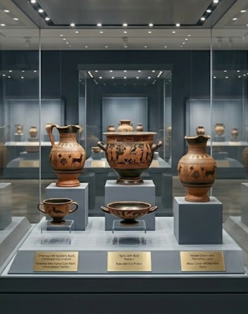
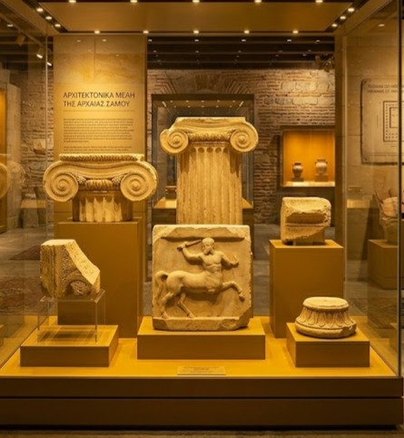

Ανακαλύπτοντας το παρελθόν, φωτίζουμε το μέλλον

Το Αρχαιολογικό Μουσείο Σάμου είναι ένας σημαντικός πολιτιστικός χώρος που φιλοξενεί ευρήματα από την αρχαϊκή και κλασική περίοδο του νησιού.
Στις συλλογές του περιλαμβάνονται γλυπτά, κεραμικά και αρχιτεκτονικά μέλη που αναδεικνύουν την ιστορία και τον πολιτισμό της αρχαίας Σάμου.
Το πιο γνωστό έκθεμα είναι ο εντυπωσιακός Κούρος της Σάμου, ένα από τα μεγαλύτερα αρχαϊκά αγάλματα της Ελλάδας.
Το μουσείο προσφέρει μια ολοκληρωμένη εικόνα της ιστορικής εξέλιξης του νησιού και αποτελεί σημαντικό σημείο αναφοράς για την αρχαιολογία του Αιγαίου.
Το Αρχαιολογικό Μουσείο Σάμου αποτελεί έναν από τους σημαντικότερους πολιτιστικούς θεσμούς του Αιγαίου και λειτουργεί ως γέφυρα ανάμεσα στο παρελθόν και το παρόν του νησιού.
Βρίσκεται σε κομβικό σημείο και προσελκύει πλήθος επισκεπτών που ενδιαφέρονται για την ιστορία και τον αρχαίο ελληνικό πολιτισμό.
Ο εκθεσιακός του χώρος είναι οργανωμένος με τρόπο που επιτρέπει στον επισκέπτη να ακολουθήσει μια χρονολογική πορεία μέσα στην εξέλιξη του πολιτισμού, από τα πρώιμα χρόνια μέχρι μεταγενέστερες περιόδους.
Η μουσειολογική προσέγγιση δίνει έμφαση στην εκπαιδευτική διάσταση, καθιστώντας την επίσκεψη μια βιωματική εμπειρία.
Παράλληλα, το μουσείο συμβάλλει ενεργά στην έρευνα και στη διατήρηση της πολιτιστικής κληρονομιάς, συνεργαζόμενο με επιστημονικά ιδρύματα και αρχαιολογικές αποστολές.
Μέσα από εκθέσεις, εκπαιδευτικά προγράμματα και δράσεις, ενισχύει τη σύνδεση της τοπικής κοινωνίας με την ιστορία της.
Η αρχιτεκτονική του και η αισθητική παρουσίασή του δημιουργούν έναν χώρο που δεν λειτουργεί μόνο ως αποθήκη εκθεμάτων, αλλά ως ζωντανό κέντρο πολιτισμού και γνώσης.

Εμβληματικό αρχαϊκό άγαλμα μεγάλης κλίμακας.

Αγγεία και αντικείμενα καθημερινής χρήσης της αρχαιότητας.

Τμήματα ναών και δημόσιων κτιρίων της αρχαίας Σάμου.